33. Exercice d’application : version 13
La version 13 modifie la version 12 sur les points suivants :
- on restructure certaines parties du code (refactoring) ;
- on gère la session différemment à l’aide du module [flask_session] ;
- on utilise des mots de passe cryptés dans le fichier de configuration ;
La version 13 est obtenue initialement par recopie de la version 12 :
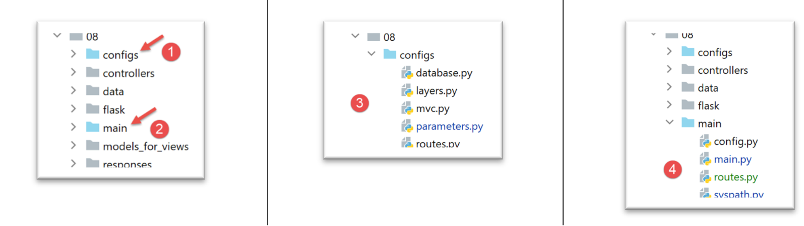
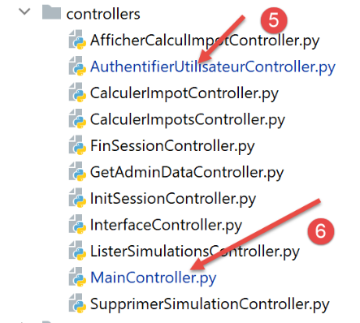
- en [1], la configuration va être refactorisée. On la sort notamment du dossier [flask] ;
- en [2], le script principal va être refactorisé. On le sort également du dossier [flask] ;
- en [3], la configuration va être éclatée sur plusieurs fichiers ;
- en [4] : on va simplifier le script principal [main] en déportant du code sur d’autres fichiers ;
- en [5], le contrôleur d’authentification va être modifié puisque désormais les mots de passe des utilisateurs seront cryptés ;
- en [6], le contrôleur principal va intégrer du code précédemment présent dans le script principal [main] ;
33.1. Refactorisation de la configuration de l’application
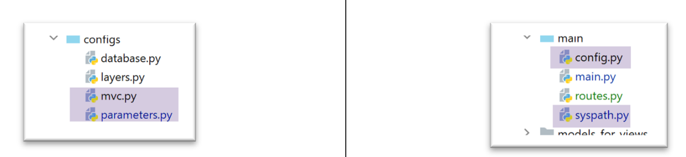
Trois nouveaux fichiers de configuration apparaissent :
- [mvc] : pour paramétrer l’architecture MVC de l’application ;
- [parameters] : qui va rassembler toutes les constantes de l’application ;
- [syspath] : qui configure le Python Path de l’application ;
Le fichier [syspath.py] est le suivant :
| def configure(config: dict) -> dict:
import os
# dossier de ce fichier
script_dir = os.path.dirname(os.path.abspath(__file__))
# chemin racine
root_dir = "C:/Data/st-2020/dev/python/cours-2020/python3-flask-2020"
# dépendances
absolute_dependencies = [
# dossiers du projet
# BaseEntity, MyException
f"{root_dir}/classes/02/entities",
# InterfaceImpôtsDao, InterfaceImpôtsMétier, InterfaceImpôtsUi
f"{root_dir}/impots/v04/interfaces",
# AbstractImpôtsdao, ImpôtsConsole, ImpôtsMétier
f"{root_dir}/impots/v04/services",
# ImpotsDaoWithAdminDataInDatabase
f"{root_dir}/impots/v05/services",
# AdminData, ImpôtsError, TaxPayer
f"{root_dir}/impots/v04/entities",
# Constantes, tranches
f"{root_dir}/impots/v05/entities",
# Logger, SendAdminMail
f"{root_dir}/impots/http-servers/02/utilities",
# dossier du script principal
script_dir,
# configs [database, layers, parameters, controllers, views]
f"{script_dir}/../configs",
# contrôleurs
f"{script_dir}/../controllers",
# réponses HTTP
f"{script_dir}/../responses",
# modèles des vues
f"{script_dir}/../models_for_views",
]
# on fixe le syspath
from myutils import set_syspath
set_syspath(absolute_dependencies)
# on rend la configuration
return {
"root_dir": root_dir,
"script_dir": script_dir
}
|
- le script [syspath] sert à configurer le Python Path de l’application (lignes 40-41) ;
- il rend deux informations utiles aux autres scripts de configuration (lignes 45-46) ;
Le script [mvc] configure l’architecture MVC de l’application web jSON / XML / HTML :
| def configure(config: dict) -> dict:
# configuration de l'application MVC
# les contrôleurs
from AfficherCalculImpotController import AfficherCalculImpotController
from AuthentifierUtilisateurController import AuthentifierUtilisateurController
from CalculerImpotController import CalculerImpotController
from CalculerImpotsController import CalculerImpotsController
from FinSessionController import FinSessionController
from GetAdminDataController import GetAdminDataController
from InitSessionController import InitSessionController
from ListerSimulationsController import ListerSimulationsController
from MainController import MainController
from SupprimerSimulationController import SupprimerSimulationController
# les réponses HTTP
from HtmlResponse import HtmlResponse
from JsonResponse import JsonResponse
from XmlResponse import XmlResponse
# les modèles des vues
from ModelForAuthentificationView import ModelForAuthentificationView
from ModelForCalculImpotView import ModelForCalculImpotView
from ModelForErreursView import ModelForErreursView
from ModelForListeSimulationsView import ModelForListeSimulationsView
# actions autorisées et leurs contrôleurs
controllers = {
# initialisation d'une session de calcul
"init-session": InitSessionController(),
# authentification d'un utilisateur
"authentifier-utilisateur": AuthentifierUtilisateurController(),
# calcul de l'impôt en mode individuel
"calculer-impot": CalculerImpotController(),
# calcul de l'impôt en mode lots
"calculer-impots": CalculerImpotsController(),
# liste des simulations
"lister-simulations": ListerSimulationsController(),
# suppression d'une simulation
"supprimer-simulation": SupprimerSimulationController(),
# fin de la session de calcul
"fin-session": FinSessionController(),
# affichage de la vue de calcul de l'impôt
"afficher-calcul-impot": AfficherCalculImpotController(),
# obtention des données de l'administration fiscale
"get-admindata": GetAdminDataController(),
# main controller
"main-controller": MainController()
}
# les différents types de réponse (json, xml, html)
responses = {
"json": JsonResponse(),
"html": HtmlResponse(),
"xml": XmlResponse()
}
# les vues HTML et leurs modèles dépendent de l'état rendu par le contrôleur
views = [
{
# vue d'authentification
"états": [
700, # /init-session - succès
201, # /authentifier-utilisateur échec
],
"view_name": "views/vue-authentification.html",
"model_for_view": ModelForAuthentificationView()
},
{
# vue du calcul de l'impôt
"états": [
200, # /authentifier-utilisateur réussite
300, # /calculer-impot réussite
301, # /calculer-impot échec
800, # /afficher-calcul-impot réussite
],
"view_name": "views/vue-calcul-impot.html",
"model_for_view": ModelForCalculImpotView()
},
{
# vue de la liste des simulations
"états": [
500, # /lister-simulations réussite
600, # /supprimer-simulation réussite
],
"view_name": "views/vue-liste-simulations.html",
"model_for_view": ModelForListeSimulationsView()
},
]
# vue des erreurs inattendues
view_erreurs = {
"view_name": "views/vue-erreurs.html",
"model_for_view": ModelForErreursView()
}
# redirections
redirections = [
{
"états": [
400, # /fin-session réussite
],
# redirection vers l’URL
"to": "/init-session/html",
}
]
# on rend la configuration MVC
return {
# contrôleurs
"controllers": controllers,
# réponses HTTP
"responses": responses,
# vues et modèles
"views": views,
# liste des redirections
"redirections": redirections,
# vue des erreurs inattendues
"view_erreurs": view_erreurs
}
|
- lignes 1-101 : ce code est connu ;
- lignes 105-116 : on rend la configuration MVC de l’application ;
Le script [parameters] rassemble les constantes de l’application :
| def configure(config: dict) -> dict:
# paramétrage de l'application
# script_dir
script_dir = config['syspath']['script_dir']
# configuration de l'application
parameters = {
# utilisateurs autorisés à utiliser l'application
"users": [
{
"login": "admin",
"password": "$pbkdf2-sha256$29000$mPM.h3COkTIGYOzde68VIg$7LH5Q7rN/1hW.Xa.6rcmR6h52PntvVqd5.na7EtgQNw"
}
],
# fichier de logs
"logsFilename": f"{script_dir}/../data/logs/logs.txt",
# config serveur SMTP
"adminMail": {
# serveur SMTP
"smtp-server": "localhost",
# port du serveur SMTP
"smtp-port": "25",
# administrateur
"from": "guest@localhost.com",
"to": "guest@localhost.com",
# sujet du mail
"subject": "plantage du serveur de calcul d'impôts",
# tls à True si le serveur SMTP requiert une autorisation, à False sinon
"tls": False
},
# durée pause thread en secondes
"sleep_time": 0,
# serveur Redis
"redis": {
"host": "127.0.0.1",
"port": 6379
},
}
# on rend le paramétrage de l'application
return parameters
|
- ligne 13 : désormais les mots de passe des utilisateurs seront cryptés ;
- lignes 34-38 : la configuration d’un serveur [Redis] sur lequel nous reviendrons ;
Avec ces nouveaux fichiers de configuration, le script [config] devient le suivant :
| def configure(config: dict) -> dict:
# configuration du syspath
import syspath
config['syspath'] = syspath.configure(config)
# paramétrage de l'application
import parameters
config['parameters'] = parameters.configure(config)
# configuration de la base de données
import database
config["database"] = database.configure(config)
# instanciation des couches de l'application
import layers
config['layers'] = layers.configure(config)
# configuration MVC de la couche [web]
import mvc
config['mvc'] = mvc.configure(config)
# on rend la configuration
return config
|
33.2. Refactorisation du script principal [main]
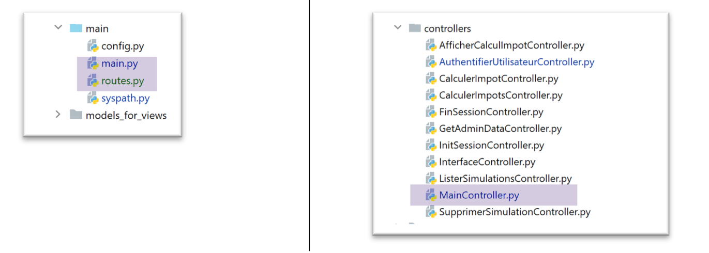
Le script principal [main.py] se contente de mettre en route le serveur :
| # on attend un paramètre mysql ou pgres
import sys
syntaxe = f"{sys.argv[0]} mysql / pgres"
erreur = len(sys.argv) != 2
if not erreur:
sgbd = sys.argv[1].lower()
erreur = sgbd != "mysql" and sgbd != "pgres"
if erreur:
print(f"syntaxe : {syntaxe}")
sys.exit()
# on configure l'application
import config
config = config.configure({'sgbd': sgbd})
# dépendances
from SendAdminMail import SendAdminMail
from Logger import Logger
from ImpôtsError import ImpôtsError
import redis
# envoi d'un mail à l'administrateur
def send_adminmail(config: dict, message: str):
# on envoie un mail à l'administrateur de l'application
config_mail = config['parameters']['adminMail']
config_mail["logger"] = config['logger']
SendAdminMail.send(config_mail, message)
# vérification du fichier de logs
logger = None
erreur = False
message_erreur = None
try:
# logueur
logger = Logger(config['parameters']['logsFilename'])
except BaseException as exception:
# log console
print(f"L'erreur suivante s'est produite : {exception}")
# on note l'erreur
erreur = True
message_erreur = f"{exception}"
# on mémorise le logueur dans la config
config['logger'] = logger
# gestion de l'erreur
if erreur:
# mail à l'administrateur
send_adminmail(config, message_erreur)
# fin de l'application
sys.exit(1)
# log de démarrage
log = "[serveur] démarrage du serveur"
logger.write(f"{log}\n")
# on vérifie la disponibilité du serveur Redis
redis_client = redis.Redis(host=config["parameters"]["redis"]["host"],
port=config["parameters"]["redis"]["port"])
# on ping le serveur Redis
try:
redis_client.ping()
except BaseException as exception:
# Redis pas disponible
log = f"[serveur] Le serveur Redis n'est pas disponible : {exception}"
# console
print(log)
# log
logger.write(f"{log}\n")
# fin
sys.exit(1)
# on mémorise le client [redis] dans la config
config['redis_client'] = redis_client
# récupération des données de l'administration fiscale
erreur = False
try:
# admindata sera une donnée de portée application en lecture seule
config["admindata"] = config["layers"]["dao"].get_admindata()
# log de réussite
logger.write("[serveur] connexion à la base de données réussie\n")
except ImpôtsError as ex:
# on note l'erreur
erreur = True
# log d'erreur
log = f"L'erreur suivante s'est produite : {ex}"
# console
print(log)
# fichier de logs
logger.write(f"{log}\n")
# mail à l'administrateur
send_adminmail(config, log)
# le thread principal n'a plus besoin du logger
logger.close()
# s'il y a eu erreur on s'arrête
if erreur:
sys.exit(2)
# import des routes de l'application web
import routes
routes.config=config
routes.execute(__name__)
|
- lignes 56-73 : on introduit un serveur Redis et son client ;
- lignes 102-104 : les routes de l’application ont été externalisées dans le script [routes] ;
33.2.1. Les modules [flask_session], et [redis]
Le serveur [Redis] va être utilisé pour mémoriser les sessions des utilisateurs. Nous allons utiliser le module [flask_session] pour gérer ces sessions. Ce module peut mémoriser les sessions des utilisateurs à plusieurs endroits. Redis est l’un de ceux-là et nous allons l’utiliser.
Le module [flask_session] doit être installé dans un terminal PyCharm :
| (venv) C:\Data\st-2020\dev\python\cours-2020\python3-flask-2020\packages>pip install flask-session
Collecting flask-session
…
|
Pour dialoguer avec le serveur Redis, il nous faut un client Redis. Celui nous sera fourni par le module [redis] que nous installons également :
| (venv) C:\Data\st-2020\dev\python\cours-2020\python3-flask-2020\packages>pip install redis
Collecting redis
…
|
33.2.2. Le serveur Redis
Le serveur Redis va servir à stocker les sessions des utilisateurs. Le module [flask_session] fonctionne de la façon suivante :
- chaque utilisateur a un identifiant de session et c’est ça qui est envoyé au client et uniquement ça. Le client ne reçoit de cookie de session qu’une seule fois, à l’issue de sa première requête. Ce cookie contient l’identifiant de session de l’utilisateur qui ne changera plus au fil des requêtes du client. C’est pourquoi le serveur n’a pas à renvoyer de nouveau cookie de session ;
- précédemment le contenu de la session était envoyé au client. Ce ne sera donc plus le cas. Le contenu de la session de l’utilisateur sera stocké sur le serveur Redis ;
Laragon vient avec un serveur Redis non activé par défaut. Il faut donc commencer par l’activer :
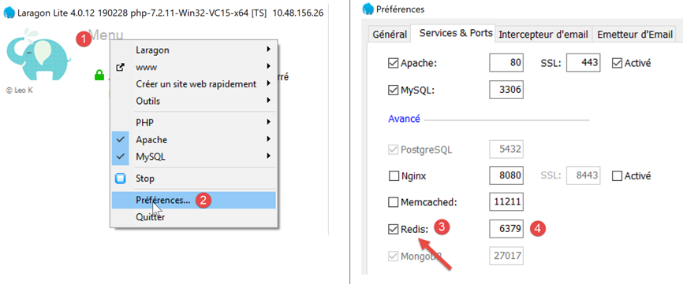
- en [3], activer le serveur [Redis] ;
- en [4], laisser le port [6379] que les clients Redis utilisent par défaut ;
Les services Laragon sont automatiquement relancés après activation de Redis :
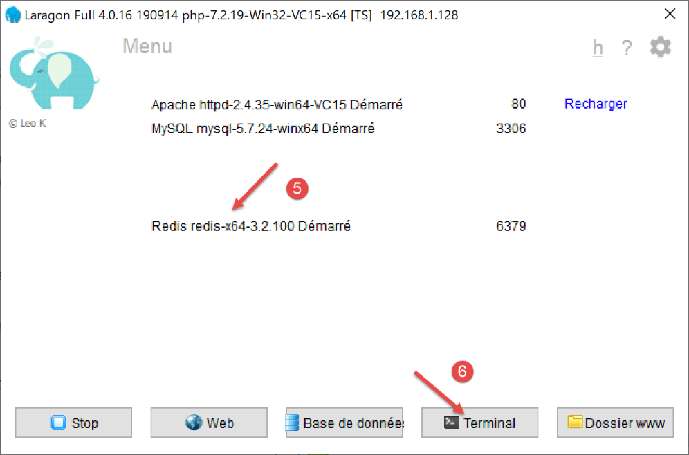
Le serveur Redis peut être interrogé en mode commande. On ouvre un terminal Laragon [6] :
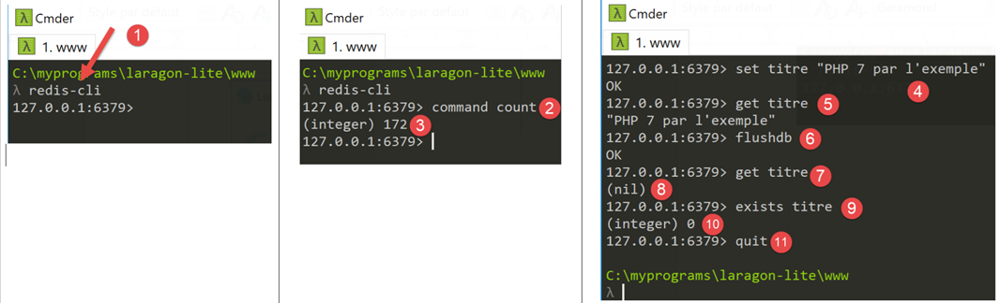
- en [1], la commande [redis-cli] lance le client en mode commande du serveur Redis ;
En juillet 2019, le client Redis peut utiliser 172 commandes pour dialoguer avec le serveur [https://redis.io/commands#list]. L’une d’elles [command count] [2], affiche ce nombre [3].
L’écriture dans [Redis] se fait avec la commande Redis [set attribut valeur] [4]. La valeur peut ensuite être récupérée avec la commande [get attribut] [5].
Il peut être nécessaire de vider la mémoire de Redis. Cela se fait avec la commande [flushdb] [6]. Ensuite si on demande la valeur de l’attribut [titre] [7], on obtient une référence [nil] [8] indiquant que l’attribut n’a pas été trouvé. On peut également utiliser la commande [exists] [9-10] pour vérifier l’existence d’un attribut.
Pour quitter le client Redis, taper la commande [quit] [11].
On peut également utiliser une interface web pour gérer les clés présentes dans le serveur Redis. Pour cela, il faut que le serveur Apache de Laragon soit lancé :
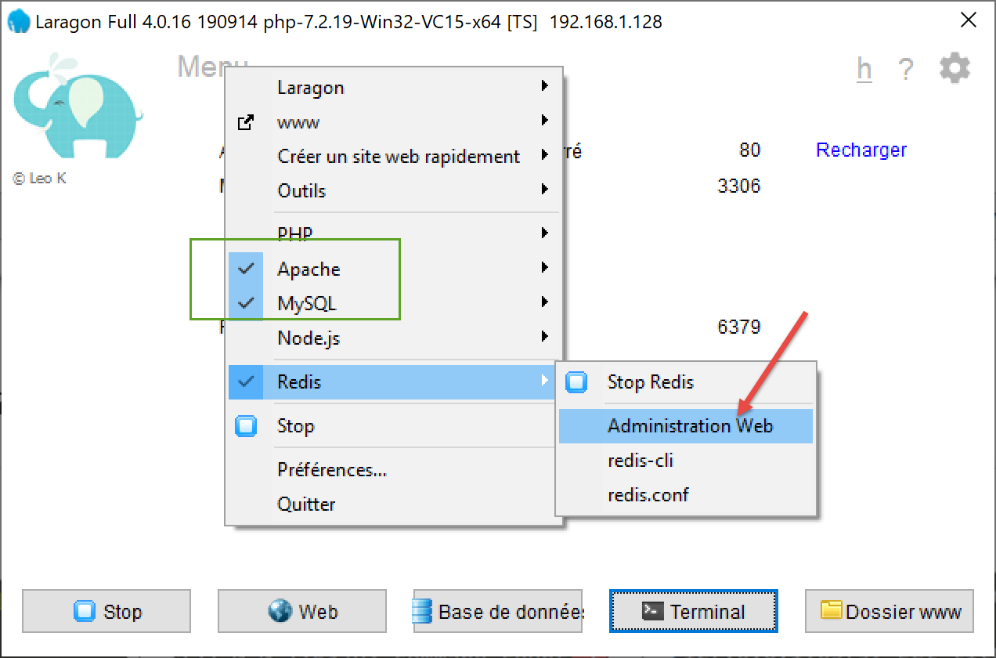
On obtient l’interface suivante :
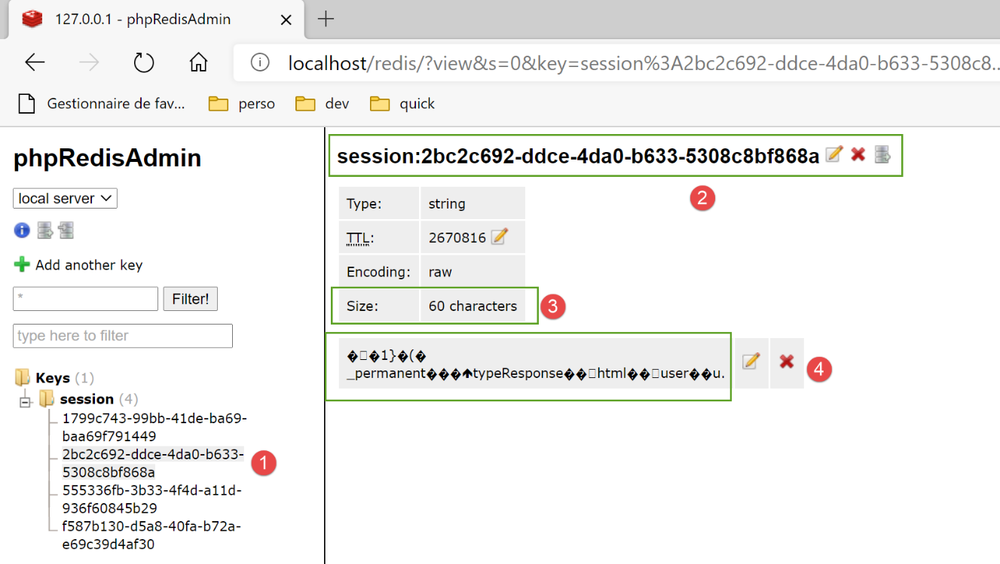
- en [1-4], l’une des sessions stockées sur le serveur Redis ;
33.2.3. Gestion du serveur Redis dans le script principal [main]
Le script [main] vérifie la présence du serveur Redis de la façon suivante :
| import redis
…
# on vérifie la disponibilité du serveur Redis
redis_client = redis.Redis(host=config["parameters"]["redis"]["host"],
port=config["parameters"]["redis"]["port"])
# on ping le serveur Redis
try:
redis_client.ping()
except BaseException as exception:
# Redis pas disponible
log = f"[serveur] Le serveur Redis n'est pas disponible : {exception}"
# console
print(log)
# log
logger.write(f"{log}\n")
# fin
sys.exit(1)
# on mémorise le client [redis] dans la config
config['redis_client'] = redis_client
|
- ligne 4 : le constructeur de la classe [redis.Redis] construit un client du serveur Redis. Les caractéristiques de celui-ci (adresse, port) sont trouvées dans le script [parameters] ;
- ligne 8 : la méthode [ping] permet de vérifier la présence du serveur Redis ;
- lignes 9-17 : si le ping n’aboutit pas, alors on logue l’erreur et on arrête le serveur ;
- ligne 20 : la référence du client Redis est mise dans la configuration ;
33.2.4. Gestion des routes dans le script principal [main]
La gestion des routes dans [main] se limite aux lignes suivantes :
| # import des routes de l'application web
import routes
routes.config=config
routes.execute(__name__)
|
- ligne 1 : les routes ont été externalisées dans le module [routes] ;
- ligne 3 : les routes ont besoin de connaître la configuration de l’exécution ;
- ligne 4 : on lance l’application Flask en lui passant le nom du script exécuté (main) ;
Le script des routes est le suivant :
| # dépendances
import os
from flask import Flask, redirect, request, session, url_for
from flask_api import status
from flask_session import Session
# application Flask
app = Flask(__name__, template_folder="../flask/templates", static_folder="../flask/static")
# configuration application
config = {}
# le front controller
def front_controller() -> tuple:
# on fait suivre la requête au contrôleur principal
main_controller = config['mvc']['controllers']['main-controller']
return main_controller.execute(request, session, config)
@app.route('/', methods=['GET'])
def index() -> tuple:
# redirection vers /init-session/html
return redirect(url_for("init_session", type_response="html"), status.HTTP_302_FOUND)
# init-session
@app.route('/init-session/<string:type_response>', methods=['GET'])
def init_session(type_response: str) -> tuple:
# on exécute le contrôleur associé à l'action
return front_controller()
# authentifier-utilisateur
@app.route('/authentifier-utilisateur', methods=['POST'])
def authentifier_utilisateur() -> tuple:
# on exécute le contrôleur associé à l'action
return front_controller()
# calculer-impot
@app.route('/calculer-impot', methods=['POST'])
def calculer_impot() -> tuple:
# on exécute le contrôleur associé à l'action
return front_controller()
# calcul de l'impôt par lots
@app.route('/calculer-impots', methods=['POST'])
def calculer_impots():
# on exécute le contrôleur associé à l'action
return front_controller()
# lister-simulations
@app.route('/lister-simulations', methods=['GET'])
def lister_simulations() -> tuple:
# on exécute le contrôleur associé à l'action
return front_controller()
# supprimer-simulation
@app.route('/supprimer-simulation/<int:numero>', methods=['GET'])
def supprimer_simulation(numero: int) -> tuple:
# on exécute le contrôleur associé à l'action
return front_controller()
# fin-session
@app.route('/fin-session', methods=['GET'])
def fin_session() -> tuple:
# on exécute le contrôleur associé à l'action
return front_controller()
# afficher-calcul-impot
@app.route('/afficher-calcul-impot', methods=['GET'])
def afficher_calcul_impot() -> tuple:
# on exécute le contrôleur associé à l'action
return front_controller()
# get-admindata
@app.route('/get-admindata', methods=['GET'])
def get_admindata() -> tuple:
# on exécute le contrôleur associé à l'action
return front_controller()
def execute(name: str):
# clé secrète de la session
app.secret_key = os.urandom(12).hex()
# Flask-Session
app.config.update(SESSION_TYPE='redis',
SESSION_REDIS=config['redis_client'])
Session(app)
# cas où on lance l'application Flask via un script console
if name == '__main__':
app.config.update(ENV="development", DEBUG=True)
app.run(threaded=True)
|
- ligne 9 : l’application Flask est instanciée ;
- ligne 12 : la configuration de l’application n’est pas encore connue à l’écriture du script. Elle n’est connue qu’au moment de son exécution ;
- lignes 20-77 : les routes de l’application telles qu’elles étaient définies dans la version précédente. Ca ne change pas ;
- lignes 14-18 : toutes les routes se contentent d’appeler la fonction [front_controller]. Nous avons dépouillé celle-ci de son code initial. Elle se contente maintenant d’appeler le contrôleur principal de l’application web ;
- lignes 79-89 : [execute] est la fonction appelée par le script [main] pour lancer l’application web ;
- ligne 81 : le module [flask_session] utilise la clé secrète de Flask ;
- lignes 82-84 : configuration du module [flask_session]. Celle-ci consiste à ajouter les clés [SESSION_TYPE, SESSION_REDIS] à la configuration [app.config] de l’application Flask [app] :
- [SESSION_TYPE] : le type de la session. Il en existe plusieurs. Le type [redis] indique que [flask_session] utilise un serveur [redis] pour mémoriser les sessions des utilisateurs. A cause de cela, on doit définir la clé [SESSION_REDIS] qui doit être la référence d’un client Redis ;
- ligne 85 : la session [Flask-Session] est associée à l’application Flask ;
- lignes 86-89 : si le paramètre [name] de ligne 79 est la chaîne [main], alors l’application Flask est lancée ;
33.3. Refactorisation du contrôleur principal
Le code autrefois dans la fonction [front_controller] du script [main] a été déplacé dans le contrôleur principal :
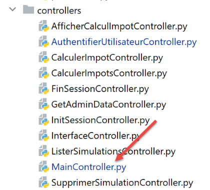
| # import des dépendances
import threading
import time
from random import randint
from flask_api import status
from werkzeug.local import LocalProxy
from InterfaceController import InterfaceController
from Logger import Logger
from SendAdminMail import SendAdminMail
def send_adminmail(config: dict, message: str):
# on envoie un mail à l'administrateur de l'application
config_mail = config['parameters']['adminMail']
config_mail["logger"] = config['logger']
SendAdminMail.send(config_mail, message)
# contrôleur principal de l'application
class MainController(InterfaceController):
def execute(self, request: LocalProxy, session: LocalProxy, config: dict) -> (dict, int):
# on traite la requête
logger = None
action = None
type_response1 = None
try:
# on récupère les éléments du path
params = request.path.split('/')
# l'action est le 1er élément
action = params[1]
# pas d'erreurs au départ
erreur = False
# le type de session doit être connu avant certaines actions
type_response1 = session.get('typeResponse')
if type_response1 is None and action != "init-session":
# on note l'erreur
résultat = {"action": action, "état": 101,
"réponse": ["pas de session en cours. Commencer par action [init-session]"]}
erreur = True
# logger
logger = Logger(config['parameters']['logsFilename'])
# on le mémorise dans une config associée au thread
thread_config = {"logger": logger}
thread_name = threading.current_thread().name
config[thread_name] = {"config": thread_config}
# on logue la requête
logger.write(f"[MainController] requête : {request}\n")
# on interrompt le thread si cela a été demandé
sleep_time = config['parameters']['sleep_time']
if sleep_time != 0:
# la pause est aléatoire pour que certains threads soient interrompus et d'autres pas
aléa = randint(0, 1)
if aléa == 1:
# log avant pause
logger.write(f"[front_controller] mis en pause du thread pendant {sleep_time} seconde(s)\n")
# pause
time.sleep(sleep_time)
# pour certaines actions on doit être authentifié
user = session.get('user')
if not erreur and user is None and action not in ["init-session", "authentifier-utilisateur"]:
# on note l'erreur
résultat = {"action": action, "état": 101,
"réponse": [f"action [{action}] demandée par utilisateur non authentifié"]}
erreur = True
# y-a-t-il des erreurs ?
if erreur:
# la requête est invalide
status_code = status.HTTP_400_BAD_REQUEST
else:
# on exécute le contrôleur associé à l'action
controller = config['mvc']['controllers'][action]
résultat, status_code = controller.execute(request, session, config)
except BaseException as exception:
# autres exceptions (inattendues)
résultat = {"action": action, "état": 131, "réponse": [f"{exception}"]}
status_code = status.HTTP_400_BAD_REQUEST
finally:
pass
# on logue le résultat envoyé au client
log = f"[MainController] {résultat}\n"
logger.write(log)
# y-a-t-il eu une erreur fatale ?
if status_code == status.HTTP_500_INTERNAL_SERVER_ERROR:
# on envoie un mail à l'administrateur de l'application
send_adminmail(config, log)
# on détermine le type souhaité pour la réponse
type_response2 = session.get('typeResponse')
if type_response2 is None and type_response1 is None:
# le type de session n'a pas encore été établi - ce sera du jSON
type_response = 'json'
elif type_response2 is not None:
# le type de la réponse est connu et dans la session
type_response = type_response2
else:
# sinon on continue à utiliser type_response1
type_response = type_response1
# on construit la réponse à envoyer
response_builder = config['mvc']['responses'][type_response]
response, status_code = response_builder \
.build_http_response(request, session, config, status_code, résultat)
# on ferme le fichier de logs s'il a été ouvert
if logger:
logger.close()
# on envoie la réponse HTTP
return response, status_code
|
Tout ce code a été vu à un moment ou à un autre.
33.4. Gestion des mots de passe cryptés
Pour gérer des mots de passe cryptés nous allons utiliser le module [passlib] qu’on installe à partir d’un terminal Pycharm :
| (venv) C:\Data\st-2020\dev\python\cours-2020\python3-flask-2020\packages>pip install passlib
Collecting passlib
…
|
Voici un exemple de script cryptant le mot de passe qu’on lui passe en paramètre :
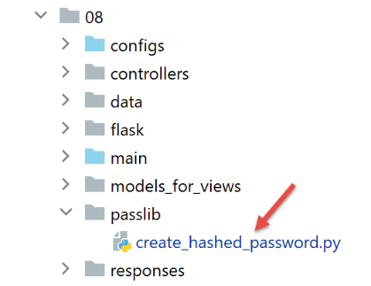
Le script [create_hashed_password] est le suivant (https://passlib.readthedocs.io/en/stable/) :
| import sys
# fonction de cryptage
from passlib.hash import pbkdf2_sha256
# on attend le mot de passe à cryter
syntaxe = f"{sys.argv[0]} password"
erreur = len(sys.argv) != 2
if erreur:
print(f"syntaxe : {syntaxe}")
sys.exit()
else:
password = sys.argv[1]
# on crypte le mot de passe
hash = pbkdf2_sha256.hash(password)
print(f"version cryptée de [{password}] = {hash}")
# vérification
correct = pbkdf2_sha256.verify(password, hash)
print(correct)
|
- ligne 16 : on crypte le mot de passe passé en paramètre ;
- ligne 20 : on compare le mot de passe [password] passé en paramètre à sa version cryptée [hash]. La fonction [verify] crypte le mot de passe [password] et compare la chaîne cryptée obtenue à [hash]. Rend True si les deux chaînes sont égales ;
Le script ci-dessus nous permet d’avoir la version cryptée du mot de passe [admin] :
| C:\Data\st-2020\dev\python\cours-2020\python3-flask-2020\venv\Scripts\python.exe C:/Data/st-2020/dev/python/cours-2020/python3-flask-2020/impots/http-servers/08/passlib/create_hashed_password.py admin
version cryptée de [admin] = $pbkdf2-sha256$29000$fU9pTendO6c0ZoyR8r5Xqg$5ZXywIUnbMfN2hPnBaefiuqWjEbmAY.Lu06i4dwcnek
True
|
Ligne 2, la valeur que nous mettons dans le script [parameters] :
| "users": [
{
"login": "admin",
"password": "$pbkdf2-sha256$29000$fU9pTendO6c0ZoyR8r5Xqg$5ZXywIUnbMfN2hPnBaefiuqWjEbmAY.Lu06i4dwcnek"
}
],
|
Le contrôleur d’authentification [AuthentifierUtilisateurController] évolue de la façon suivante :
| from passlib.handlers.pbkdf2 import pbkdf2_sha256
…
# on vérifie la validité du couple (user, password)
users = config['parameters']['users']
i = 0
nbusers = len(users)
trouvé = False
while not trouvé and i < nbusers:
trouvé = user == users[i]["login"] and pbkdf2_sha256.verify(password, users[i]["password"])
i += 1
# trouvé ?
if not trouvé:
…
|
33.5. Tests
Outre les tests avec un navigateur, on peut également utiliser les clients du dossier [http-servers/07] écrits pour la version 12. Ils doivent ‘marcher’ également pour la version 13 :

- en [1], les trois clients doivent fonctionner ;
- en [2], les deux tests doivent fonctionner ;